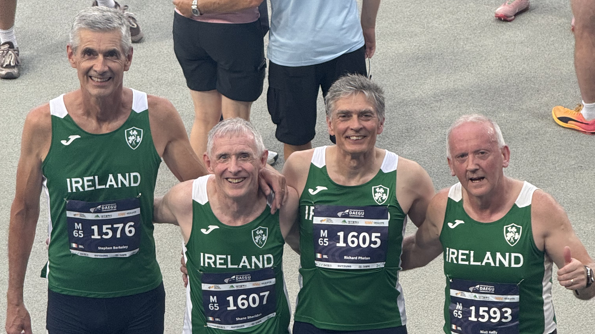
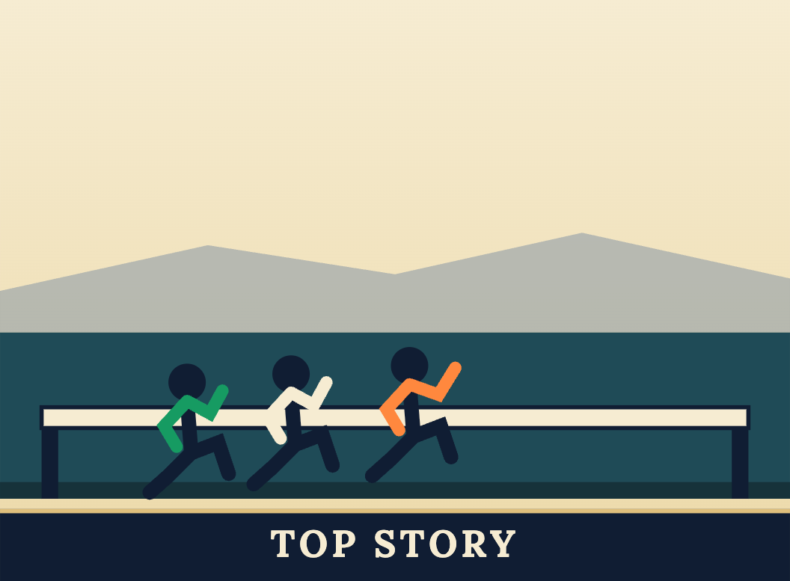
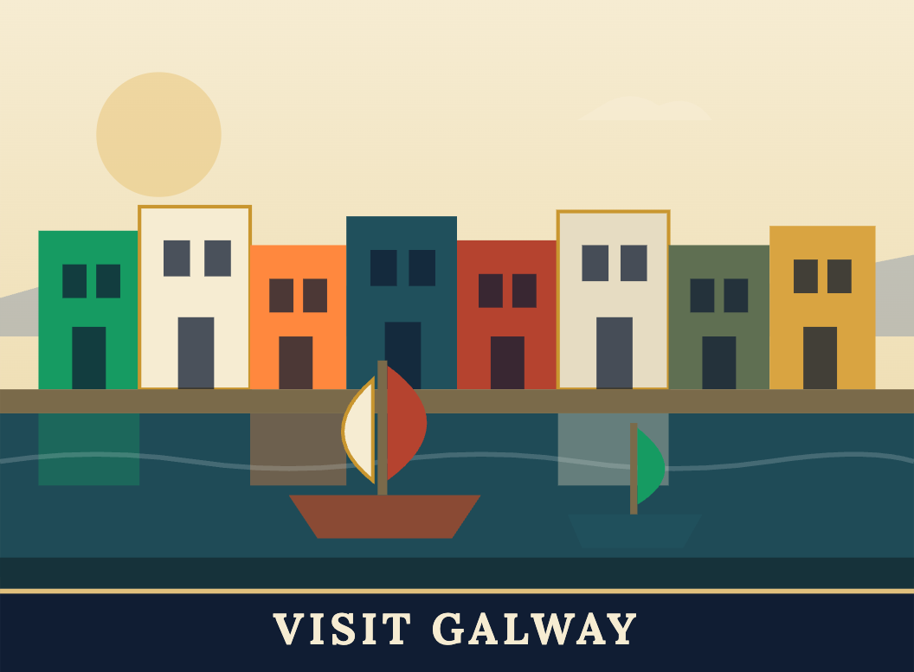
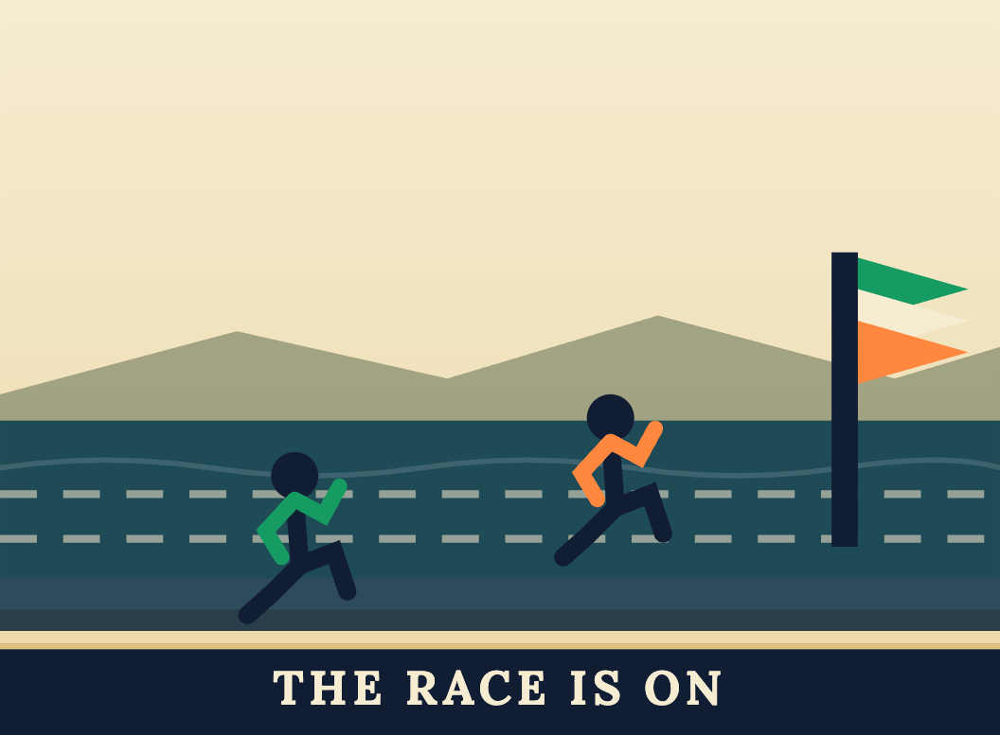
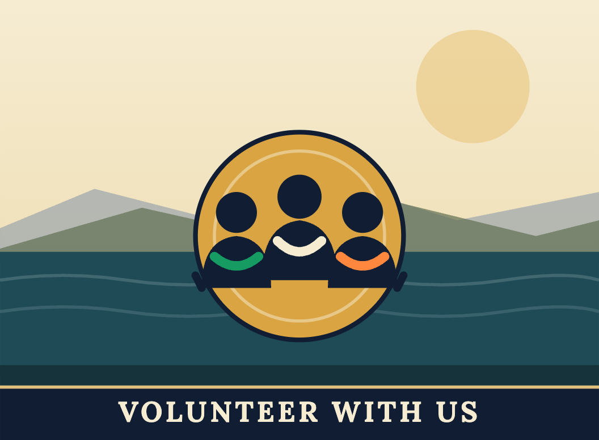
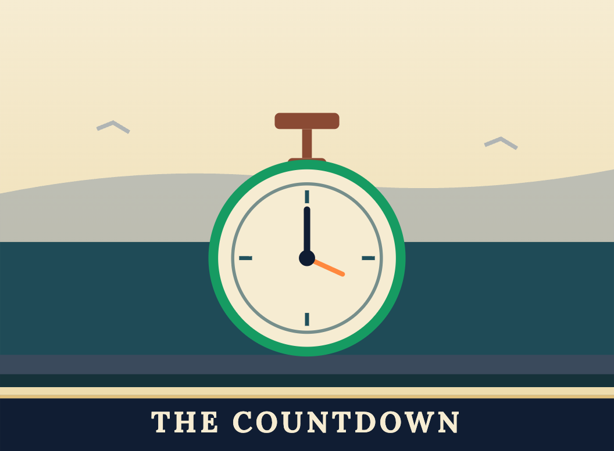
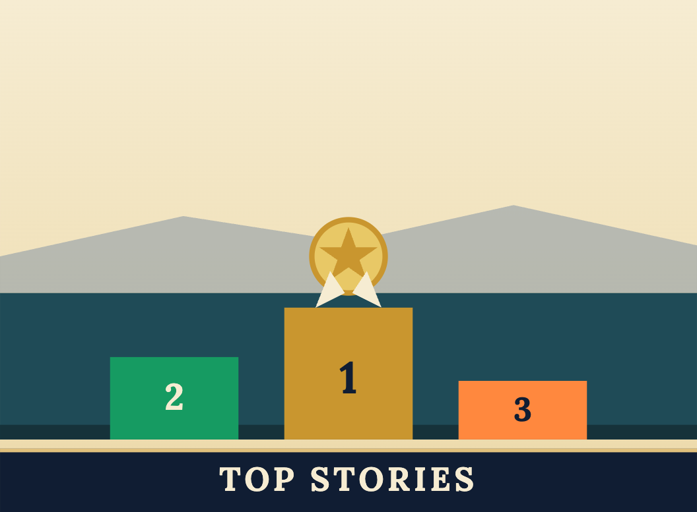
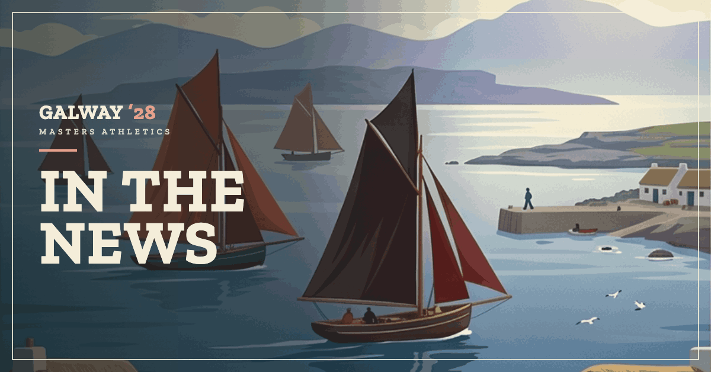
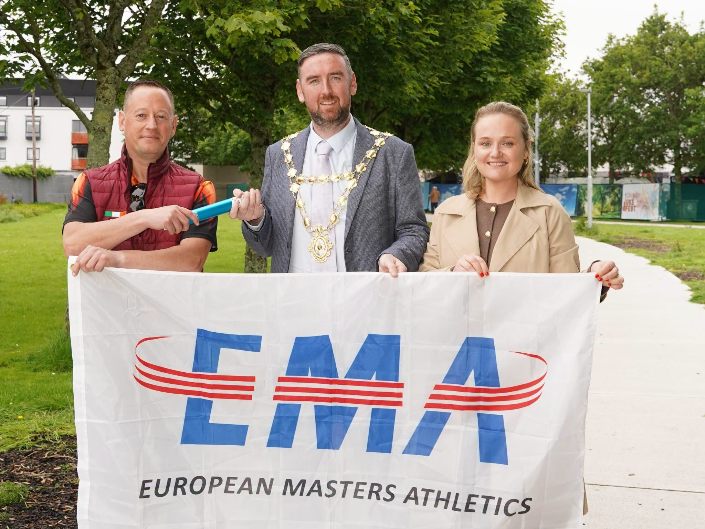
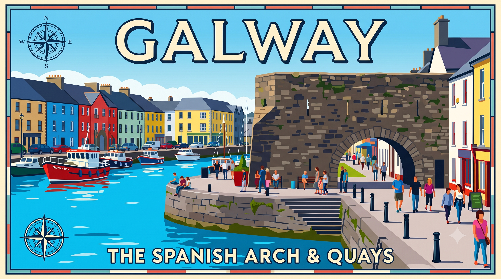

Latest Updates

23 August 2026
Fourteen medals from a team of 28 — six world titles, four silver and four bronze, and 23rd place out of 106 countries. Two golds each for John MacDermott and Sean McMullin, and a full set for Edel Maguire.
Read more →
19 August 2026
28 Irish athletes have entered the World Masters Championships in Korea this week, among 7,476 athletes from 106 countries. We'll be there too, bringing you the story from the ground.
Read more →
11 August 2026
There's a race, and then there's everything around it. From the Wild Atlantic Way to the buzz of the medieval city, here's why Galway 2028 is as much a trip to remember as a championship to compete in.
Read more →
30 July 2026
Before Galway welcomes Europe's masters athletes in 2028, we look back at where the non-stadia championships came from — and what makes them special.
Read more →
20 July 2026
Hosting 1,000+ masters athletes and 3,000 visitors takes a village. We're starting to build our volunteer community early — here's how to get involved.
Read more →
17 July 2026
Behind the scenes, the groundwork for May 2028 continues — plus a look at what's happening elsewhere on the European masters calendar this summer.
Read more →
14 July 2026
From the mountains of Czechia to the streets of Catania, Irish masters athletes have had a summer to remember — a great sign of things to come for Galway 2028.
Read more →
4 July 2026
The announcement of EMACNS Galway 2028 has been picked up by media across Ireland and beyond. Here's a roundup of the coverage.
Read more →
30 June 2026
A major milestone for our championship: Galway City Council is officially on board, bringing city-wide support and international reach to EMACNS 2028.
Read more →
15 June 2026
With 23 months to go, we take a closer look at the city that will host EMACNS 2028 — and why Galway is the perfect stage for Europe's masters athletes.
Read more →1 June 2026
We are delighted to announce that Galway will host the European Masters Athletics Championships Non-Stadia in May 2028.
Read more →